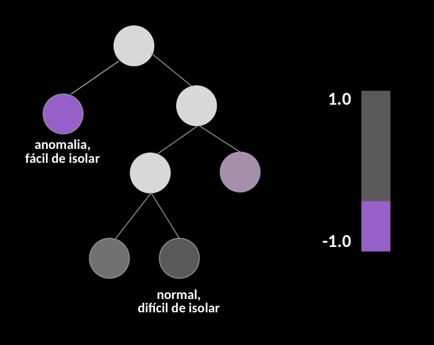
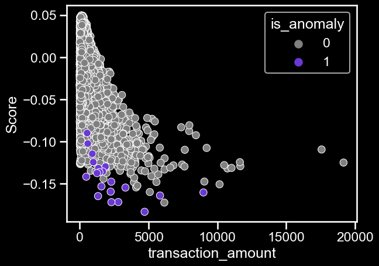
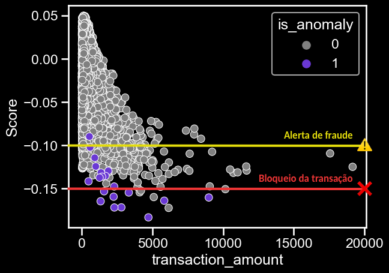
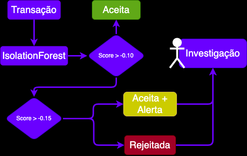

Aprenda a intuição por trás do algoritmo e entenda sua aplicação para detecção de fraudes em cartões

| Field name | Type |
|---|---|
| transaction_amount | number |
| installments | integer |
| login_attempts_last_12h | integer |
| total_of_last_1h_transactions | number |
| merchant_id | string |
| time_of_day | string |
| location | string |
Agora vamos treinar o isolation forest usando os dados de transações, primeiros vamos importar as libs e carregar o nosso dataset:
from sklearn.ensemble import IsolationForest
from sklearn.preprocessing import OneHotEncoder
import pandas as pd
import seaborn as sns
import matplotlib.pyplot as plt
# Load the synthetic credit card transactions dataset
# Dataset link: https://www.kaggle.com/datasets/marcusos/synthetic-fraud-detection
df = pd.read_csv('data/transactions.csv')
# numerical variables
numerical_cols = ['transaction_amount', 'installments', 'login_attempts_last_12h', 'total_of_last_1h_transactions']
# One-hot encode the categorical variables
categorical_cols = ["merchant_id", "location", "time_of_day"]
features = numerical_cols + categorical_cols
df[features].head()| transaction_amount | installments | login_attempts_last_12h | total_of_last_1h_transactions | merchant_id | location | time_of_day | |
|---|---|---|---|---|---|---|---|
| 0 | 149.906 | 1 | 1 | 0 | B | USA | afternoon |
| 1 | 562.798 | 1 | 0 | 2 | A | USA | morning |
| 2 | 86.064 | 1 | 1 | 1 | B | Canada | afternoon |
| 3 | 571.313 | 1 | 2 | 0 | C | USA | afternoon |
| 4 | 1146.57 | 1 | 2 | 2 | A | Canada | morning |
Agora vamos pre-processar o dataset (tratando as categóricas) e por fim fitar o IsolationForest
# Enconding categorical variables using OneHotEncoder
onehot_encoder = OneHotEncoder(sparse_output=False)
onehot_encoded = onehot_encoder.fit_transform(df[categorical_cols])
df_encoded = pd.concat([df[numerical_cols], pd.DataFrame(onehot_encoded)], axis=1)
# Train the isolation forest model
clf = IsolationForest(random_state=42)
clf.fit(df_encoded.values)
# Make predictions on the data
preds = clf.decision_function(df_encoded.values)


👍 Vantagens
👎 Desvatagens
Me ajude dando o seu like, comentando ou compartilhando essa publicação. Sua opinião é importante para mim! ❤️👍